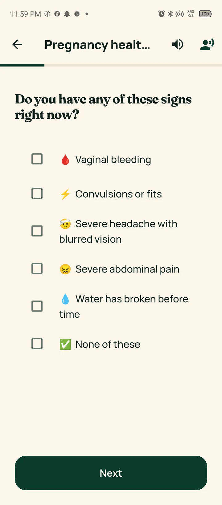
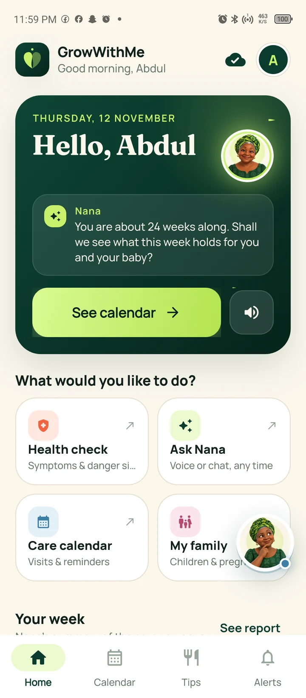
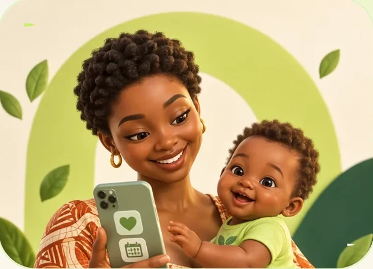

Care that works where the network doesn't.
GrowWithMe is a working, offline-first AI care companion for mothers and children under five in Northern Ghana — built in Ghana, for the last mile.


Distance, connectivity and literacy keep families from timely care.
Northern Ghana carries some of the country's worst maternal and child health outcomes. Referrals die quietly between the CHPS compound and the hospital. Most digital-health pilots fail here for the same reason: they assume a smartphone, data credit or literacy that families do not have.

Ghana national ratio — historically higher in the northern regions.
Chronic malnutrition concentrates in the north.
Nutrition advice must fit local staples and tight budgets.
Three in four children miss the diet they need.
Source: Ghana Demographic and Health Survey / Ghana Health Service figures as cited in the venture brief. Founder engagement with mothers, CHPS nurses and community volunteers in Northern Ghana.
A complete care journey — in a phone that never needs the internet.
Six capabilities, engineered into one local-first app. Tap through the real screens.
From a mother's thumb to a closed referral.
Not an alert sent into the void — a case followed all the way to care.
Danger sign
Offline triage returns low, moderate or urgent. The rules engine — never the AI — owns the verdict.
One tap
A structured PDF patient report is SMSed to the nearest volunteer, the CHPS compound and the registered hospital.
Tracked
Every alert is followed to closure — arrival confirmed, care confirmed, timestamped end to end.
Seen
The facility dashboard surfaces missed visits, growth faltering and lost-to-follow-up families for a gentle SMS nudge.
Not one feature. A combination nobody else has built for this context.
Offline-first
Triage, calendar, growth monitoring and core Nana commands run with data switched off. Connectivity stops being a barrier.
Bounded AI
A deterministic IMCI-aligned rules engine owns every verdict and can only raise — never lower — an AI suggestion. Auditable to health authorities.
Closed loop
Most tools stop at "alert sent". We track each urgent case to confirmed facility arrival and nudge when care slips.
A working product today. Field evidence is the next step.
We are honest about where we are: internally verified end to end on real Android devices — not yet a field trial. That pilot is what this round funds.
- ✓ Offline triage returns correct low / moderate / urgent verdicts with the network disabled
- ✓ Urgent alerts generate the PDF report and dispatch SMS to facility and responder test numbers
- ✓ EPI calendar schedules immunisation, ANC/PNC, Vitamin A and deworming by child age
- ✓ WHO −2 SD crossings raise malnutrition flags
- ✓ Nana's on-device model handles core commands in airplane mode
- ✓ Referral loop closed by test recipients on the facility dashboard
Founder-funded, pre-revenue. First external capital converts the prototype into measured evidence.
A large, underserved population — reached through the public system.
Northern Region
Hundreds of thousands of mothers and under-fives across CHPS catchment areas. One district first: ~5 facilities, ~40 community health workers.
National
Ghana's full under-five cohort through Ghana Health Service, district directorates, NGOs and foundations.
West Africa
Low-connectivity markets with the same structural gap. Offline-first and voice-first travel well.
Reach model: free caregiver Android app + SMS/USSD companion for feature phones + institutional procurement for scale.
Free for families. Paid by the institutions that need the outcomes.
Institutional licences
Per-facility and per-CHW licences for the dashboard and referral infrastructure, procured by Ghana Health Service, districts and programme funders.
Donor & CSR subsidy
Grants and CSR programmes keep the caregiver app free at point of use while the pilot generates publishable evidence.
Telecom partnerships
Airtime / data zero-rating — in discussion with MTN Ghana Foundation — removes the last cost barrier for SMS alerts.
Twelve months from working prototype to field evidence.
Foundation
Complete TOVO LABs registration. Sign a supervised-pilot agreement with GHS or the Northern Region Health Directorate. Finalise consent and data-protection procedures.
Launch
Train ~40 community health workers. Go live in one district across ~5 CHPS facilities. Target 1,500–2,000 mother–child registrations.
Evidence
Timestamp every urgent alert from danger sign to facility arrival. Iterate from CHW and mother feedback. Publish open-source components.
Scale plan
Demonstrate measurable lifts in EPI completion and ANC/PNC attendance against district baseline. Deliver pilot report and multi-district scale-up plan with GHS.
To convert a self-funded working prototype into measured field evidence and a GHS scale-up pathway.
Start a conversation- Pilot operations & field coordination35%
- Devices for community health workers25%
- SMS, data and cloud costs15%
- Clinical-content review & data protection15%
- Independent evaluation & reporting10%
Not optimising for an early exit — the goal is sustainable scale-up with Ghana's public health system.
Built locally, by the people who understand the context.
Abdul Hafis Mohammed
Built the entire stack in-house: the offline-first Flutter app, Node/Express/MongoDB backend, Arkesel SMS referral gateway, hybrid AI integration and the facility dashboard API. Full-time on the venture, founder-funded.
- Ghana Health Service Country Innovation Platform — pilot & clinical review conversations
- University for Development Studies, Tamale — joint evaluation discussion
- Recruiting a CHPS nurse and a maternal-health clinician as clinical advisers
No formal advisory board yet. We would value introductions to experienced health-tech mentors and board members.
Let's build the evidence together.
A working Android APK, a 2¾-minute demo video and the technical architecture are available to reviewers immediately.